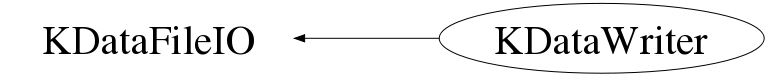

class KDataWriter: public KDataFileIO
KDataWriter.cxx KDataStructure Author: Adam Cox <mailto:adam.cox@ik.fzk.de> on 4/30/10. * Copyright 2010 Karlsruhe Institute of Technology. All rights reserved. This class writes out an KDS file. The basic use is, after creating an instance of this class, get a pointer to an event object, set the various data parameters in the KDS file and then call KDataWriter::Fill to add the event to an output tree. This file creates an KDS file with trees filled with KHLAEvents, but you can also select Raw and HLaMC events.
Function Members (Methods)
public:
| KDataWriter(const Char_t* filename, const Char_t* eventType = "HLA", const Char_t* mode = "recreate") | |
| KDataWriter(const Char_t* fileName, KEvent** anEvent, const Char_t* mode = "recreate") | |
| virtual | ~KDataWriter() |
| static TClass* | Class() |
| TTree* | CloneTree(TTree* treeIn, Long64_t nentries = -1, Option_t* option = "") |
| virtual Bool_t | Close(Option_t* opt = "") |
| TTree* | ConcatenateTrees(TList* li, Option_t* anOpt = "") |
| Int_t | Fill() |
| string | KDataFileIO::GetBranchName() const |
| virtual Int_t | KDataFileIO::GetEntries() const |
| KEvent* | GetEvent() |
| const char* | KDataFileIO::GetEventClassName() const |
| const char* | KDataFileIO::GetFileName() const |
| TFile* | KDataFileIO::GetTFile() const |
| string | KDataFileIO::GetTreeName() const |
| string | KDataFileIO::GetTreeTitle() const |
| TTree* | KDataFileIO::GetTTree() const |
| virtual TClass* | IsA() const |
| Bool_t | IsReady() const |
| Bool_t | OpenFile(const Char_t* fileName, const Char_t* eventType = "HLA", const Char_t* mode = "recreate") |
| Bool_t | OpenFile(const Char_t* fileName, KEvent** anEvent, const Char_t* mode = "recreate") |
| virtual void | ShowMembers(TMemberInspector& insp, char* parent) |
| virtual void | Streamer(TBuffer& b) |
| void | StreamerNVirtual(TBuffer& b) |
| Int_t | Write(const Char_t* name = 0, Int_t option = TObject::kWriteDelete, Int_t bufsize = 0) |
protected:
| virtual void | KDataFileIO::Delete() |
| TFile* | KDataFileIO::OpenFileForReading(const Char_t* name) |
| TFile* | KDataFileIO::OpenFileForWriting(const Char_t* name, const Char_t* option = "recreate", const Char_t* title = "") |
private:
| KDataWriter(const KDataWriter& aWriter) | |
| KDataWriter& | operator=(const KDataWriter& aWriter) |
| Bool_t | SetTreeBranch(KEvent** event) |
| Bool_t | SetTreeBranch(const Char_t* eventType) |
| void | WriteTCuts() |
Data Members
protected:
| TFile* | KDataFileIO::fFile | |
| TTree* | KDataFileIO::fTree |
Class Charts
{kind=link}
{kind=link}
{kind=link}
{kind=link}

Function documentation
KDataWriter(const Char_t* name, const Char_t* eventType, const Char_t* mode)
TClass::GetClass("TBits")->IgnoreTObjectStreamer();
KDataWriter(const Char_t* name, KEvent** event, const Char_t* mode)
TClass::GetClass("TBits")->IgnoreTObjectStreamer();
KDataWriter(const KDataWriter& aWriter)
KDataWriter& operator=(const KDataWriter& aWriter)
~KDataWriter(void)
Bool_t SetTreeBranch(KEvent **anEvent)
This method must be called After calling OpenFileForWriting because the order of the creation of the TFile and the TTree matters to ROOT
Int_t Write(const Char_t* name = 0, Int_t option = TObject::kWriteDelete, Int_t bufsize = 0)
The options are the same as those options in TObject::Write
void WriteTCuts(void)
TTree * ConcatenateTrees(TList* li, Option_t* anOpt = "")
Bool_t SetTreeBranch(KEvent** event)